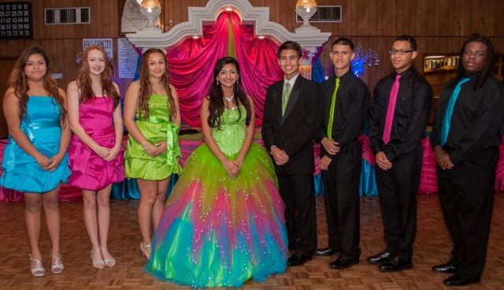
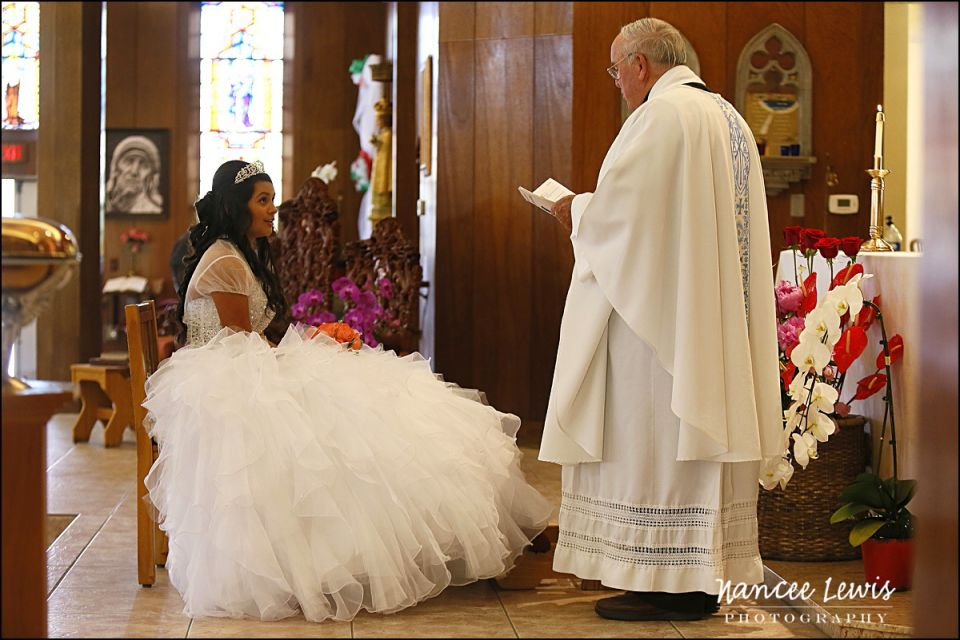
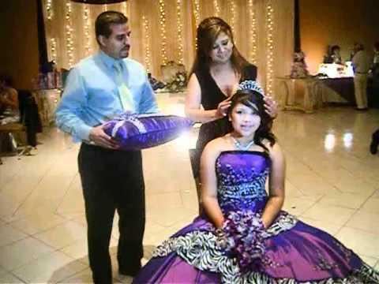
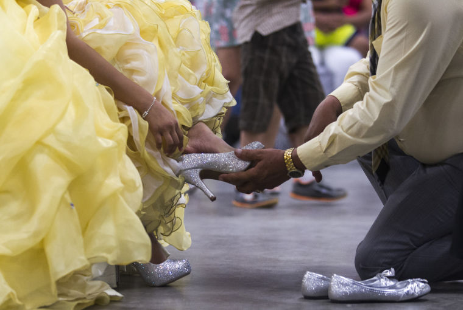
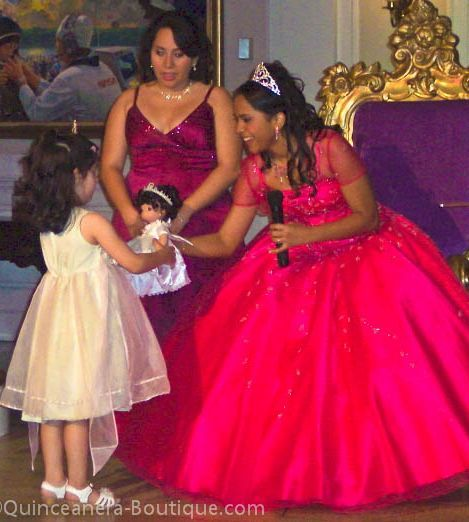
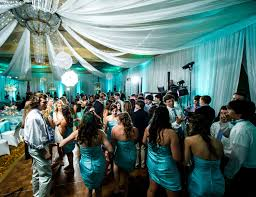

Also called Quince Anos
-It is basically a big birthday party- although a very special and memorable one.
-It is the Hispanic tradition of celebrating a young girls coming of age- her 15th birthday. The quinceañera tradition celebrates the young girl (la Quinceanera), and recognizes her journey from childhood to maturity.
-The Quince Anos is a glorious celebration that remains a cherished and honored tradition
They highlight..
It is tradition for her to choose special friends to participate in what is called the court of honor.
-The Special friends are usually her closest friends, brothers, sisters, or cousins; the special people in her life with whom she wants to share the spot light.
-The court of honor can be all young girls (called Dama), all young men (called Chambeian, Escorte or Galan) or a combination of both.

The ceremony is not the same for every girl, it depends on what traditions she would like to include.
During the ceremony The Quinceanera's court typically offer the special items that are customary for her ceremony to her during the actual ceremony.
-Although in some Hispanic cultures, the gifts are given to her by padrinos (also called god parents) specially chosen by the family. Padrinos are formally recognized, and often a part of the procession for the ceremony, or do the presentation of the gifts to the priest for blessing.
The traditional ceremony girls have special meaning for the celebration. There honored significance relates to the girl’s coming of age.
-These special gifts are signs of loyalty and commitment to god, family, and the community.
-If the celebration includes the mass of thanksgiving, the gifts are presented to the priest first for special blessing.
-The ceremony gifts are the distinctive, precious treasures for the ceremony; a cherished custom that highlights the tradition.
-It is recommended to have a bible covered in either satin, lace, silk, taffeta, etc.
-It is the first object presented to the young lady during the ceremony.
-The priest will talk about the importance of the word of god in la Quinceaneras life.
-The bible symbolizes and important resource to keep the word of god in her life.
-It is the crown that the young lady wears to indicate that she is a princess, the daughter of god.
-The tiara denotes a princess before god and the world; a triumph over childhood and ability to face the challenges ahead.
-The minister will talk about the crowns in the bible.
-The tiara also plays a role in the actual ceremony; It is traditional for the head piece worn by la Quinceanera to be ceremoniously replaced with the tiara.
-The crowning is done by either her parents or her godparents when presenting the gift; the scepter is also presented at this time.
-It symbolizes authority, and more importantly, responsibility for her life, that is now being given to the young women.
-The ring should have a diamond or stone of her choice.
-The ring represents the infinite circle of Gods love and has to be worn on the right hand ring finger.
-When the ring is given, la Quinceanera may read a verse or sing a song about the promise made to god.
-The cross or medal symbolizes faith in God, in herself, and in her world
-The flowers should be the same color as her dress.
-She will leave the bouquet at the alter as an offering and her parents will approach her when she is at the alter.
-A touch of elegance is added with smaller decorated ceremony pillows for the presentation of her ceremony gifts.
-One close button, one half open, and one completely open.
-They represent her infancy, childhood, and current age respectively.
-Each flower should receive a special mention during the religious ritual.
-One of the most popular traditions is changing of the shoes.
-The father or favored male relative ceremoniously changes the young girls flat shoes to high heels.
-This is a beautiful symbol of her transformation from a little girl to a young lady.
-Thelast doll can be used for part of the ceremony or just decoration and keepsake.
-The doll represents the last things of childhood, or the end of childhood, no that she will focus on the things of a young lady.
-In some Hispanic cultures, the capias (printed ribbons with her name and date) are pinned to the doll, and the Quinceanera circulates among her guest thanking them for their presence and presenting them with the cápia momenta taken from the doll.
-Although in another custom, to symbolize leaving childhood behind, she passes her last doll to a younger girl.
-It must be an 18-inch candle and has to be decorated with ribbons and roses that match the dress.
-It represents the light given to the children by their parents.
-At this moment the mother will walk, with the candle, towards the alter after the Quinceañera has offered the flower bouquet, then both parents meet the young lady at the alter where they light the candle and place it on a candlestick. Now the parents kneel down and pray for there daughter. La Quinceanera will pray and thank god for the new role she will assume.
-Some of these traditions might take place, if they choose, at the reception.
-Finally the Quinceanera thanks her parents and talks about the meaning of the celebration, the ceremony is concluded with a final blessing from the priest.
At the reception there is always a toast to la Quinceanera known as the brindis.
Using decorated champagne glasses, the guest are invited to off their congratulations and best wishes. Festivities include